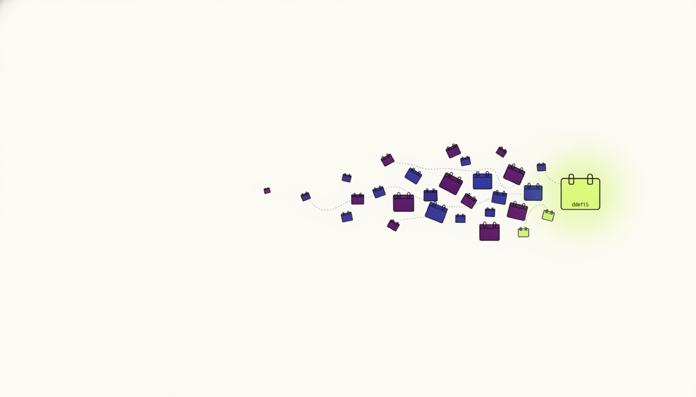
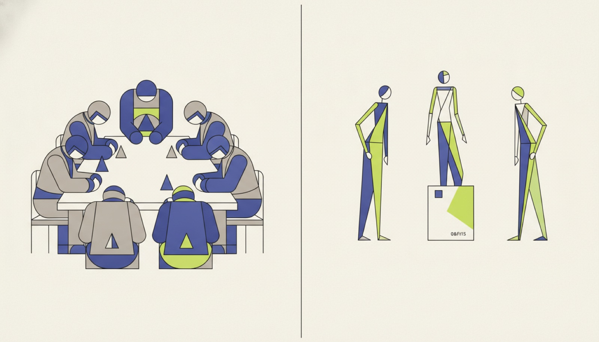
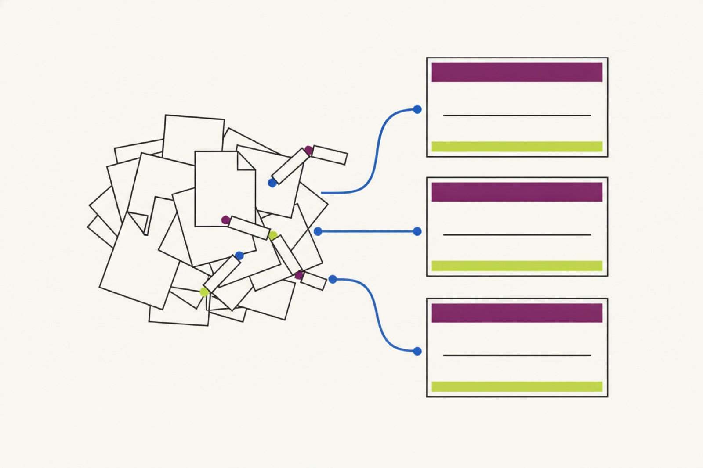
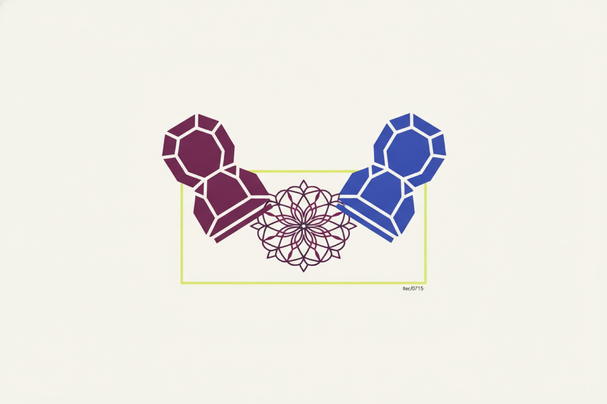
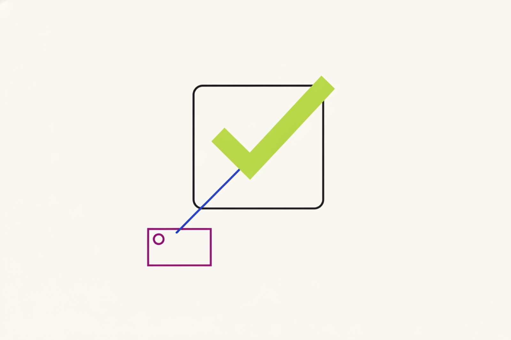
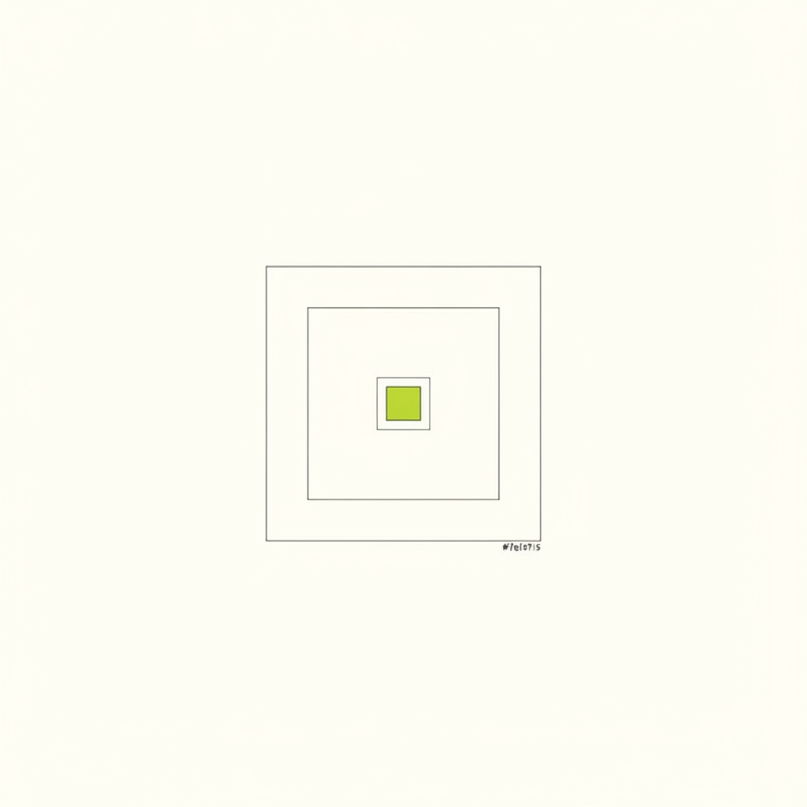

How do meetings actually go where you work?
A 7-minute anonymous study about meetings, decisions, and follow-through. You'll also try a short interactive demo of an early product idea and tell us, honestly, what it would be worth. Nothing here is for sale.
- ≈8 minutes
- Anonymous by default
- Interactive demo inside

About you and your week
A few quick details help us understand your working week.
Your toolkit
A quick look at the tools and routines around your work.
AI at work today
Tell us what AI looks like in your day-to-day work.
The annoying parts
These questions are about meetings that take more than they give.
When the client changes the plan
Think of the last real time a client asked to change the scope, the deadline, or the price in the middle of a project.
An idea we're testing
Here is the idea in plain English.
Most meetings exist to move work along: agree on a change, unblock a decision, check a promise was kept. Imagine your calendar had one extra button: 'Sort this out.'
Before anyone books an hour, an assistant reads what's allowed to be read — the plan, the agreement, the current status — prepares the facts, and works out the one thing that still genuinely needs people. Then it books only that: sometimes a message, sometimes two people for nine minutes, sometimes a proper meeting. Afterwards, everyone sees the same record of what was agreed — and the promise gets checked.
8 people × 60 minutes = 480 minutes of attention
Notes typed up later. Two people remember it differently.
3 people × 9 minutes = 27 minutes
One shared record. Follow-up checked automatically.
This is an illustration of the idea, not a measured result.

Your own numbers
Use your own estimates — there are no right answers.
That's roughly 0 hours of people's time — about $0 — every month, by your own estimates.
This is your arithmetic, not our promise.
Try it — 90 seconds
Try the short example, then tell us what you think.
The request lands.
The assistant prepares. Nothing is decided.
- Read the signed agreement ✓
- Checked the project plan ✓
- Checked progress so far ✓
- Found the one question only people can answer.
It collected the facts and shows where each one came from. It can't promise anything to anyone.

You choose.
Both sides approve.
Talk isn't a deal. Both sides press approve on the exact same words.

0 of 2 approved…
A record you can both trust.
Shared record
- What changes
- Choose an option to see the record.
- New date
- —
- Price
- —
- Who owns it
- —
One week later — ✓ the promise was kept, checked automatically against what was agreed.

Fictional example — an idea we're researching, not a finished product.
About your world
Two short questions, in your own words.
Tailored from your earlier answers by an AI assistant.
Straight answers
Tell us what feels useful, and what does not.
What it's worth
Imagine this for one team of about 10 people, priced per month in US dollars. There are no right answers — gut feel is fine.
Last page
A few final questions and an optional way to stay in touch.
Thank you — that genuinely helps.
Your answers are safely on their way.
You spent about 0 minutes answering.

We read every answer. If you left an email, you'll hear from us only about this study.